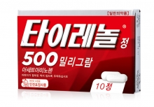
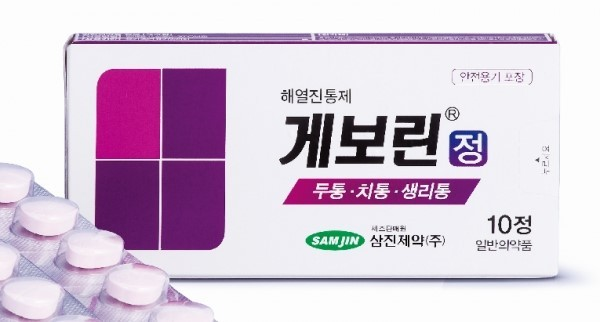
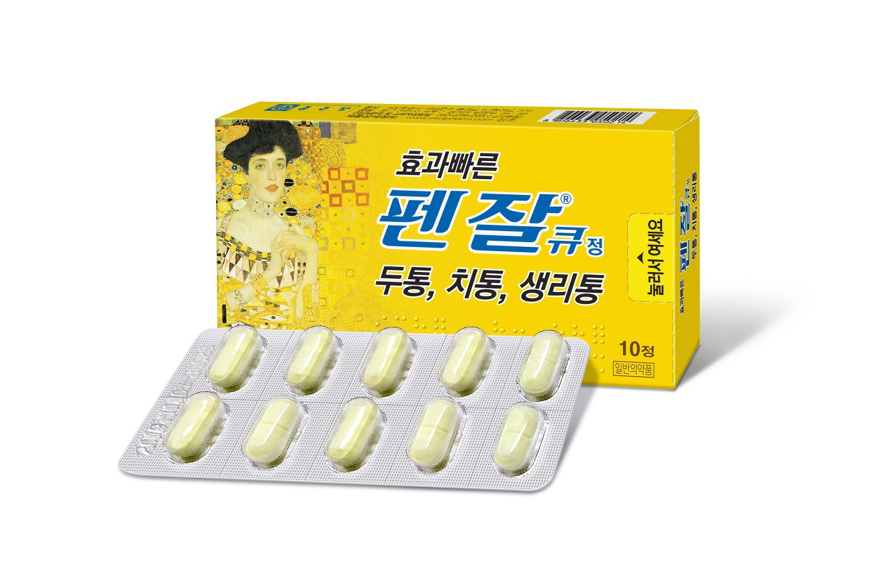
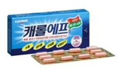
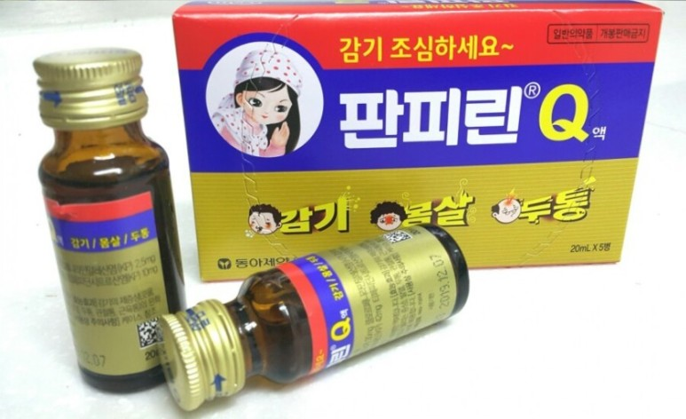
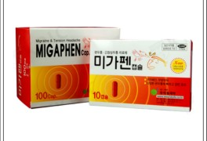
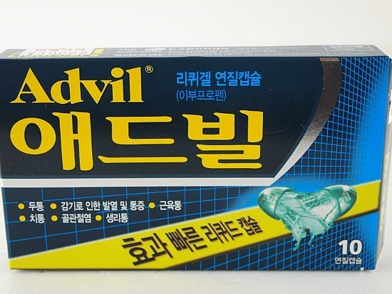

| 약 이미지 | 약 이름 | 약 성분 | 약 주요 효능,효과 | 약 가격 |
|---|---|---|---|---|
|  | 타이레놀정 160mg | 아세트아미노펜, 카페인, 아이소프로필안티피린 | - 통증을 차단하고, 열을 내려주는데 다른 진통제에 비해서 효과가 빠르고 세고, 지속시간이 길다. - 감기로 인한 발열 및 동통(통증), 두통, 신경통, 근육통, 월경통, 염좌통(삔 통증) 치통, 관절통, 류마티양 동통(통증)] |
2,500원 |
|  | 게보린정 | 아세트아미노펜, 카페인, 아이소프로필안티피린 | - 두통, 치통, 발치(이를 뽑음)후 동통(통증), 인후(목구멍)통, 귀의 통증, 관절통, 신경통, 요(허리)통, 근육통, 견통(어깨통증), 타박통, 골절통, 염좌통(삔 통증), 월경통(생리통), 외상(상처)통의 진통 - 오한(춥고 떨리는 증상), 발열시의 해열 - 15세 미만은 섭취하면 안된다. |
3,000원 |
|  | 펜잘큐정 | 아세트아미노펜, 에텐자미드, 카페인무수물 | - 두통, 치통, 발치(이를 뽑음)후 동통(통증), 인후(목구멍)통, 귀의 통증, 관절통, 신경통, 요(허리)통, 근육통, 견통(어깨결림), 타박통, 골절통, 염좌통(삔 통증), 월경통(생리통), 외상(상처)통의 진통 - 오한(춥고 떨리는 증상), 발열시의 해열 - 5세 미만은 복용하지 않는 것이 좋다. |
2,500원 |
|  | 캐롤에프정 | 이브프로펜아르기닌(이부프로펜) | - 류마티스 관절염, 골관절염, 배통, 두통, 월경통, 외상후, 소염ㆍ진통 유행성 감기로 인한 발열 및 통증. - 성인 및 12세 이상의 소아에게 복용 |
3,000원 |
|  | 판피린정 | 아세트아미노펜, 에텐자미드, 카페인무수물, 클로르페니라민말레산염 | - 감기 제증상 (콧물, 코막힘, 재채기, 인후통, 오한, 발열, 두통, 관절통, 근육통)의 완화 - 천식이 있는 사람과 3개월 미만의 영아는 복용해서는 안된다. |
2,500원 |
|  | 미가펜 | 아세트아미노펜, 디클로랄페나존, 이소메텝텐 |
- 긴장성 두통 및 혈관성 두통 (편두통) - 녹내장 환자, 심한 신장애 환자, 고혈압 환자, 기질성 심장애 환자, 간 장애 환자, MAO 저해저를 투여받고 있는 환자는 섭취하면 안된다. - 지금은 생산 중단 상태이다. |
2,500원 |
|  | 애드빌정 | 이부프로펜 | - 감기로 인한 발열 및 동통, 요통, 생리통, 류마티양 관절염, 연소성 류마티양 관절염, 골관절염(퇴행성 관절질환), 수술후 동통 - 두통, 치통, 근육통, 신경통, 강직성 척추염, 급성통풍, 건선성 관절염, 연조직손상(염좌, 좌상), 비관절 류마티스질환(건염, 건초염, 활액낭염) - 공복시 투여는 피하는 것이 좋다 |
3,000원 |